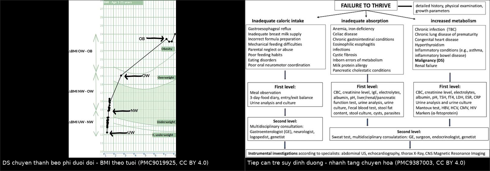
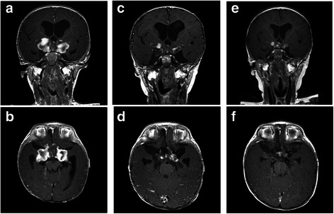
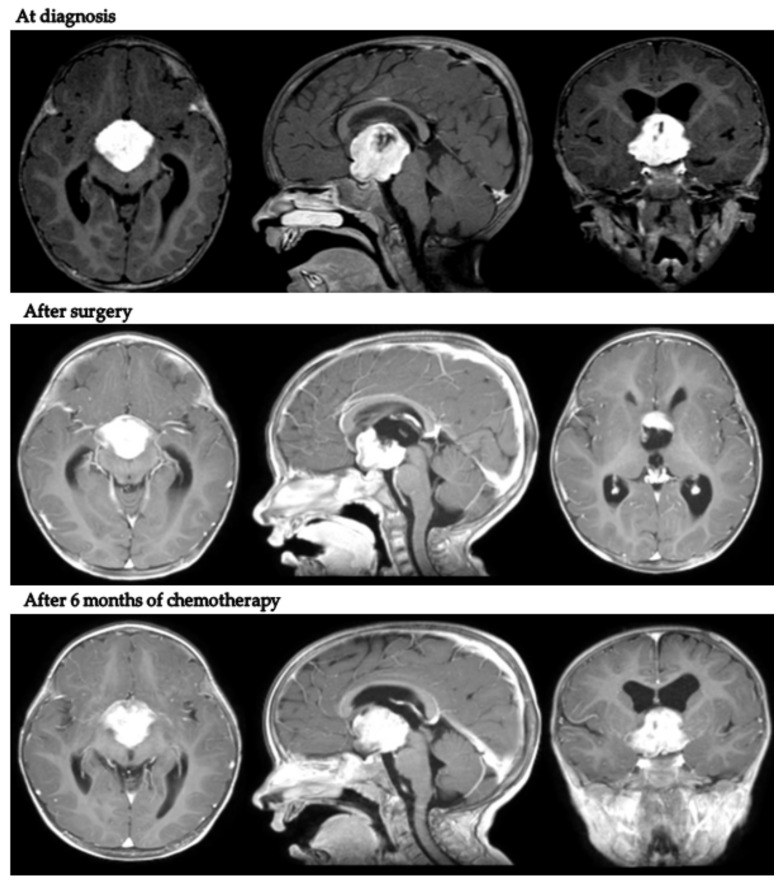
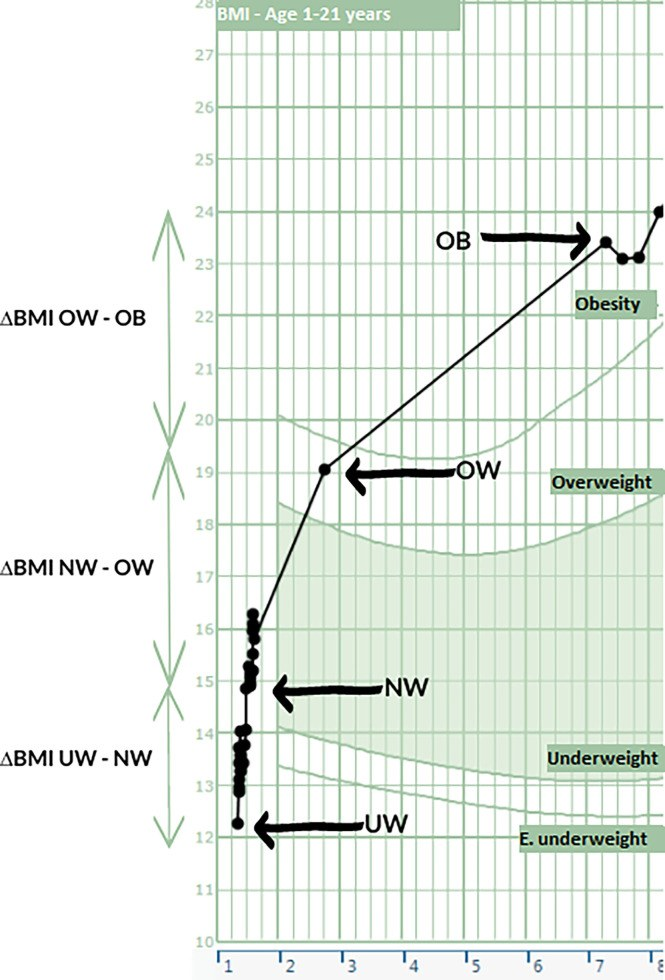

1756 — Hội chứng gian não ở nhũ nhi: sụt cân – tăng động – u đường thị/dưới đồi / Diencephalic syndrome of infancy
Tags: pattern:suy-dinh-duong pattern:gay-teo pattern:u-duong-thi pattern:u-doi-thi pattern:beo-phi-duoi-doi vung:nao vung:tuyen-yen protocol:MRI-nao protocol:nhan-trac score:BMI-SDS incidentaloma:khong
Mức chắc chắn (certainty): tổng hợp y văn (literature synthesis) — 1 bài tổng quan hệ thống 2026 về hội chứng gian não (Children 2026, PMC12939502, CC BY 4.0), 1 miniseries + tổng quan 100 ca trong 70 năm (Ital J Pediatr 2022, PMC9387003, CC BY 4.0), 1 loạt 9 trẻ có ảnh MRI trước–sau điều trị (Diagnostics 2022, PMC8947184, CC BY 4.0), 1 loạt 10 trẻ chuyển từ gầy teo sang béo phì dưới đồi có biểu đồ BMI (Front Endocrinol 2022, PMC9019925, CC BY 4.0) và 1 ca nguyên văn nhũ nhi 5 tháng có MRI nối tiếp (BMC Cancer 2015, PMC4559913, CC BY 4.0). Không có ca nguyên văn do nhóm tự viết; ca trong quiz là ca có ảnh từ bài gốc, ghi rõ PMCID.
Câu chốt: một đứa trẻ gầy teo nhưng vẫn ăn, vẫn cao lên, vẫn tăng động và vui vẻ không phải "trẻ kén ăn" — đó là khối u vùng dưới đồi. Chẩn đoán dựa trên 4 dấu hiệu: (1) cân nặng < bách phân vị 3 hoặc tụt ≥ 2 đường bách phân vị dù ăn đủ; (2) chiều cao vẫn đi theo kênh bình thường; (3) tăng động + hưng phấn; (4) MRI có khối ở vùng dưới đồi–giao thoa thị. Chậm chẩn đoán trung bình 11 tháng — và trong 11 tháng đó thị thần kinh đã teo không hồi phục. Trong 100 ca được tổng hợp, 96% có BMI hoặc tỉ lệ cân/chiều < bách phân vị 5 nhưng rung giật nhãn cầu chỉ 43% và nôn 35% — tức là triệu chứng thần kinh xuất hiện MUỘN, không được chờ.
1. Tổng quan bệnh học – cơ chế hình ảnh
1.1 Bệnh học và dịch tễ
- Định nghĩa (Russell 1951): hội chứng gian não (diencephalic syndrome, DS) = suy dinh dưỡng nặng kiểu teo mỡ dưới da ở nhũ nhi, ăn đủ hoặc hơi giảm, chiều cao vẫn tăng bình thường, kèm tăng động, hưng phấn, do u vùng dưới đồi/giao thoa thị.
- Hiếm: < 200 ca được báo cáo trong 70 năm (1951–2024) (PMC12939502). Vì hiếm nên bác sĩ nhi không nghĩ tới, và chậm chẩn đoán trung bình 11 tháng (PMC12939502).
- Tuổi: ~90% khởi phát trước 24 tháng, trung vị 6–7 tháng; đa số trước 12 tháng (PMC12939502). Trong 100 ca tổng hợp: tuổi khởi phát trung bình 30,6 tháng (0–191), nhưng khi do u thần kinh đệm thì chỉ 7–14 tháng; khi do u sọ hầu thì 92 tháng (26–191) (PMC9387003).
- Bệnh nền: u thần kinh đệm cấp thấp vùng dưới đồi–giao thoa thị, chủ yếu u sao bào lông (pilocytic astrocytoma, WHO độ I); có thể u sao bào thể nhầy–lông (pilomyxoid), u tế bào hạch, và hiếm khi u sao bào độ ác cao (ca 5 tháng tuổi: u sao bào thể ác tính WHO III) (PMC12939502, PMC4559913).
- NF1: 50–60% u đường thị nằm trong NF1, nhưng DS rất hiếm gặp ở NF1; khi có, tuổi khởi phát muộn hơn — 21,2 tháng (14–26) vs 10 tháng (3–17), p = 0,015 (PMC12939502, PMC8947184).
- Tiên lượng: sống 5 năm 90–100%, nhưng PFS 5 năm chỉ 10–40%; trong nghiên cứu HIT-LGG-1996, trẻ < 1 tuổi có DS có OS 10 năm chỉ 42,7%. Loạt 9 trẻ: không ca nào tử vong, nhưng 100% tiến triển với PFS 5 năm 11,1% (PMC12939502, PMC8947184).
1.2 TẠI SAO trẻ gầy teo mà vẫn cao lên
- Không phải thiếu ăn — mà là "đốt cháy" quá mức: tổng quan mô tả tăng chuyển hóa nghỉ (REE) dù ăn đủ; cân nặng < bách phân vị 1 trong nhiều ca dù phụ huynh mô tả ăn ngon miệng (PMC12939502).
- Trục GH bị "lệch": GH tăng nhưng ức chế bằng glucose bất thường → đề kháng GH một phần; IGF-1 cao ở trẻ gầy — trung vị 2,8 SDS ở trẻ nhẹ cân so với 0,20 SDS ở trẻ bình thường/thừa cân, và IGF-1 SDS tương quan nghịch với BMI SDS (r = −0,37; p < 0,001) (PMC9019925). Đây là lý do chiều cao vẫn giữ trong khi mô mỡ biến mất.
- Ly giải mỡ do peptide: β-lipotropin (có tính ly giải mỡ) tăng trong một số ca; giả thuyết "đề kháng GH + tăng ly giải mỡ" giải thích kiểu "teo mỡ nhưng cơ và xương vẫn phát triển" (PMC12939502).
- Vì sao lại có giai đoạn béo phì sau này: cùng một tổn thương dưới đồi, mất nhân cung/nhân bụng–giữa → mất tín hiệu no → tăng ăn + giảm REE → béo phì dưới đồi (HO). Loạt 10 trẻ: BMI SDS −2,64 lúc chẩn đoán u, thừa cân ở 4,5 tuổi (2,2–9,8), tổng chênh +5,75 SDS (4,5–8,7) (PMC9019925). Vì vậy DS và HO là hai đầu của cùng một phổ (bài 1754).
- Vì sao chậm chẩn đoán: cân nặng tụt được quy cho trào ngược, dị ứng đạm sữa bò, celiac, kén ăn; trong 3 ca miniseries đều đã thử đổi sữa, xét nghiệm phân, siêu âm bụng trước khi chụp MRI. Sơ đồ tiếp cận suy dinh dưỡng đặt "malignancy (DS)" ở nhánh tăng chuyển hóa — nhánh ít được nghĩ tới nhất (PMC9387003).
1.3 Ngưỡng định lượng trụ cột
| Đại lượng | Con số | Nguồn |
|---|---|---|
| Định nghĩa cân nặng | < bách phân vị 3 hoặc tụt ≥ 2 đường bách phân vị dù ăn đủ; BMI < −2 SDS | PMC12939502 · PMC9387003 |
| Chiều cao | vẫn trong kênh bình thường (chiều cao/age bình thường) | PMC12939502 |
| Tuổi khởi phát | trung vị 6–7 tháng; ~90% < 24 tháng; u thần kinh đệm 7–14 tháng; u sọ hầu 92 tháng | PMC12939502 · PMC9387003 |
| Triệu chứng trong 100 ca | BMI/tỉ lệ cân–chiều < bách phân vị 5: 96%; nôn 35%; tăng động 26%; rung giật nhãn cầu 43% | PMC9387003 |
| Chậm chẩn đoán | ~11 tháng | PMC12939502 |
| Loạt 9 trẻ | tuổi trung vị 14 tháng (3–26); giãn não thất cần dẫn lưu 4/9 (43%); PFS 5 năm 11,1%; OS 5 năm 100% | PMC8947184 |
| Loạt 10 trẻ DS → HO | BMI SDS −2,64 → thừa cân ở 4,5 tuổi; chênh +5,75 SDS; 70% có rối loạn tuyến yên; 2 ca dậy thì sớm | PMC9019925 |
| Rối loạn nội tiết | suy thượng thận 20–30%; ĐTĐ nhạt 20–35%; béo phì dưới đồi 30–50% | PMC12939502 |
| Tiên lượng | OS 5 năm 90–100%; PFS 5 năm 10–40%; trẻ < 1 tuổi OS 10 năm 42,7% | PMC12939502 |
| IGF-1 | 2,8 SDS (gầy) vs 0,20 SDS (bình thường/thừa cân); r = −0,37 với BMI SDS | PMC9019925 |
| Kích thước u trong miniseries | 44 × 40 × 38 mm và 40 × 36 × 31 mm | PMC9387003 |
2. Mẫu hình + chẩn đoán phân biệt theo vị trí (Gamut)
- Suy dinh dưỡng ở nhũ nhi + chiều cao bình thường:
- DS do u dưới đồi–đường thị · trào ngược dạ dày–thực quản · dị ứng đạm sữa bò · bệnh celiac · xơ nang · bệnh tim bẩm sinh · suy thận mạn · nhiễm trùng mạn (lao, HIV) · cường giáp · bệnh ác tính khác.
- Suy dinh dưỡng + tăng động/hưng phấn:
- DS · cường giáp · ngộ độc (amphetamine, caffeine) · rối loạn phát triển/thần kinh · sang thương dưới đồi khác (u mầm, LCH, u sọ hầu).
- Suy dinh dưỡng + rung giật nhãn cầu/lác/teo thị:
- DS · u mầm trên yên (bài 1731) · LCH vùng dưới đồi–tuyến yên (bài 1751) · u sọ hầu · giãn não thất · bệnh thoái hóa thần kinh.
- U vùng dưới đồi/giao thoa thị trên MRI ở trẻ:
- U sao bào lông (pilocytic) · u sao bào thể nhầy–lông · u thần kinh đệm thị (NF1) · u mầm · LCH · u sọ hầu · glioma thần kinh thị–dưới đồi dạng lan · u sao bào độ cao (hiếm).
- Trẻ đã DS rồi chuyển sang béo:
- Béo phì dưới đồi (HO) · béo phì do corticoid · suy giáp trung ương · dậy thì sớm trung ương · tăng cân do điều trị (bài 1754).
- Theo vị trí trên MRI:
- Giao thoa thị/đường thị → giảm thị lực, lác, teo thị; vùng dưới đồi trước/nhân cung → chán ăn/teo mỡ; vùng sau/thể vú → về sau béo phì nặng; não thất III → giãn não thất, nôn.
3. Bảng so sánh phân biệt (ma trận đối chiếu)
| Thực thể (entity) | Hình ảnh/lâm sàng điển hình | Chốt vào (rule-in) | Chốt loại (rule-out) | Gợi ý xác nhận |
|---|---|---|---|---|
| Hội chứng gian não (bài này) | Nhũ nhi gầy teo, ăn đủ, cao bình thường, tăng động–hưng phấn; khối dưới đồi–giao thoa thị ngấm thuốc | Cân < bách phân vị 3 (hoặc BMI < −2 SDS) + chiều cao bình thường + tăng động/hưng phấn + khối trên MRI | Có triệu chứng tiêu hóa rõ + MRI bình thường → loại DS | MRI sọ có/không cản quang; BMI SDS; IGF-1 |
| Suy dinh dưỡng do nuôi dưỡng/kén ăn | Cân và chiều cao cùng tụt; ăn ít, không tăng động; MRI bình thường | Đáp ứng tăng cân khi tăng năng lượng nhập | Vẫn tụt cân dù ăn đủ và đã tăng năng lượng → không phải | Nhật ký ăn 3 ngày; cân nặng hàng tuần |
| Bệnh celiac / dị ứng đạm sữa bò | Tiêu chảy, chướng bụng, thiếu máu, IgA-tTG dương (celiac) | IgA-tTG dương + sinh thiết tá tràng | Xét nghiệm âm, không triệu chứng tiêu hóa → loại | IgA-tTG, nội soi (PMC9387003) |
| Cường giáp | Gầy, tăng động, tim nhanh, bướu giáp, mắt lồi | TSH thấp + FT4/FT3 cao | TSH/FT4 bình thường → loại | TSH, FT4, FT3 |
| U mầm trên yên | Đái tháo nhạt, mất điểm sáng T1 thùy sau, AFP/hCG tăng | AFP > 25 ng/mL hoặc hCG > 50 IU/L; mất điểm sáng T1 > 90% | AFP/hCG âm + điểm sáng T1 còn | MRI + marker (bài 1731) |
| LCH vùng dưới đồi–tuyến yên | Cuống yên ≥ 3 mm, mất điểm sáng T1, ĐTĐ nhạt; tổn thương xương/da | CD1a/Langerin dương ở tổn thương ngoài sọ | Sinh thiết âm + không tổn thương ngoài sọ | MRI + sinh thiết (bài 1751) |
| U sọ hầu | Trẻ lớn hơn (92 tháng), vôi hóa, nang, suy tuyến yên | Vôi hóa + thành phần nang trên CT/MRI | Không vôi hóa, u đặc ngấm đều | CT xương sọ + MRI (bài 1731) |
| Béo phì dưới đồi (giai đoạn sau) | BMI tăng nhanh sau điều trị, tăng ăn, giảm REE | BMI +1,0 SDS/12 tháng, tồn tại ≥ 24 tháng, BMI SDS ≥ +2,0 | BMI ổn định/giảm → chưa phải HO | Theo dõi BMI 3 tháng (bài 1754) |

*Trái: ca DS chuyển thành béo phì dưới đồi — BMI đi từ vùng gầy (E. underweight) lên thừa cân rồi béo phì theo tuổi; đây là lý do phải theo dõi BMI nhiều năm, không chỉ đến khi hết gầy. Phải: sơ đồ tiếp cận trẻ suy dinh dưỡng — nhánh tăng chuyển hóa có "malignancy (DS)", nhánh duy nhất phải chụp MRI sọ. Ảnh ghép letterbox, không crop; cả hai nguồn CC BY 4.0 (PMC9019925 Fig. 1; PMC9387003 Fig. 2).*4. Protocol chụp + hệ phân độ/điểm chuẩn hóa
4.1 Chỉ định chụp — "gầy teo không rõ nguyên nhân" là chỉ định MRI
- Chụp MRI sọ khi: suy dinh dưỡng không giải thích được sau bước 1 (nhật ký ăn, xét nghiệm phân/máu, siêu âm bụng), đặc biệt nếu chiều cao vẫn bình thường, có tăng động/hưng phấn, rung giật nhãn cầu/lác, hoặc nôn tái diễn (PMC9387003, PMC12939502).
- Không chờ có triệu chứng thần kinh: trong 100 ca, rung giật nhãn cầu chỉ 43%, nôn 35%; 96% chỉ có dấu hiệu cân nặng (PMC9387003).
4.2 Protocol MRI
- MRI sọ có và không cản từ, lát 1–2 mm, gồm:
- T1W sagittal + coronal qua giao thoa thị, đường thị, vùng dưới đồi, tuyến yên;
- T2W/FLAIR (u thường tăng T2);
- T1W sau tiêm gadolinium 3 mặt phẳng (u sao bào lông ngấm không đồng nhất, có thành phần nang);
- DWI/ADC để phân biệt u tế bào cao (hạn chế khuếch tán) với u cấp thấp;
- MRI tủy sống chỉ khi nghi lan màng não/u mầm, không thường quy cho u thần kinh đệm đường thị (PMC12939502).
- Đặc điểm hình ảnh điển hình: khối dưới đồi–giao thoa thị, T1 giảm/đồng tín hiệu, T2 tăng, ngấm thuốc thay đổi; u sao bào lông ngấm không đồng nhất; có thể kèm giãn não thất (PMC12939502).
- Phân loại u đường thị: dùng phân loại Dodge sửa đổi (modified Dodge classification, MDC), còn gọi PLAN — mô tả vị trí theo đường thị, giao thoa, dải thị, vùng dưới đồi (PMC8947184).
4.3 Đánh giá kèm theo (bắt buộc trước/ngay sau chẩn đoán)
- Nhân trắc: cân nặng, chiều cao, BMI SDS, vòng đầu, biểu đồ tăng trưởng theo tuổi (phải thấy chiều cao không tụt).
- Mắt: thị lực theo tuổi, thị trường, soi đáy mắt (teo thị), khúc xạ.
- Nội tiết: FT4/TSH, cortisol sáng/ACTH, IGF-1, LH/FSH, prolactin, Na/osmolality (ĐTĐ nhạt); theo dõi dậy thì sớm (PMC12939502, PMC9019925).
- Thần kinh: vòng đầu, dấu hiệu giãn não thất; nôn là dấu hiệu giãn não thất, không phải "do gầy".
4.4 Điều trị và theo dõi
- Hóa trị là tuyến đầu ở u thần kinh đệm cấp thấp trẻ nhỏ (carboplatin + vincristine, hoặc phác đồ LGG); tránh xạ trị ở trẻ < 3 tuổi vì di chứng thần kinh–nội tiết.
- Hỗ trợ dinh dưỡng: tăng năng lượng, nuôi qua ống khi cần; cân nặng thường cải thiện trong 12 tháng điều trị (PMC8947184).
- Thuốc đích: ức chế BRAF/MEK (dabrafenib/trametinib, selumetinib) khi có BRAF V600E hoặc u đường thị trong NF1 (PMC12939502).
- Phẫu thuật: chủ yếu giải áp não thất hoặc sinh thiết; không cố lấy toàn bộ u dưới đồi để tránh tổn thương trục dưới đồi–tuyến yên (PMC12939502).
- Theo dõi dài hạn: MRI mỗi 3–6 tháng trong 2 năm đầu; BMI mỗi 3 tháng (vì có thể đảo sang béo phì); thị lực và nội tiết mỗi 6–12 tháng.
flowchart TD
A[Nhu nhi gay teo<br/>du an duoc - chieu cao binh thuong] --> B[Buoc 1: nhat ky an 3 ngay<br/>cong thuc mau - phan - sieu am bung]
B --> C{MRI so co va khong can quang<br/>lat 1-2 mm}
B -->|Khong giai thich duoc| C
C --> D{Khoi duoi doi - giao thoa thi?}
D -->|Co| E[DS: danh gia thi luc - noi tiet<br/>Doi chieu MDC/PLAN]
D -->|Khong| F[Quay lai tiep can suy dinh duong<br/>tieu hoa - tim - than - noi tiet]
E --> G{Hoa tri tuyen dau<br/>carboplatin + vincristine}
G --> H[Theo doi BMI moi 3 thang<br/>MRI moi 3-6 thang]
H --> I{BMI tang nhanh?}
I -->|Co| J[Beo phi duoi doi:<br/>can thiep dinh duong - van dong - thuoc]
I -->|Khong| K[Tiep tuc theo doi<br/>thi luc - noi tiet - BMI]
5. Biến thể bình thường và cạm bẫy
- "Trẻ vẫn cao lên nên không sao" — sai: chiều cao bình thường là một phần của định nghĩa DS, không phải dấu hiệu an toàn. Ngược lại, nếu cân và chiều cùng tụt thì mới nghiêng về suy dinh dưỡng do nuôi dưỡng (PMC12939502).
- "Trẻ vui vẻ, tăng động là bình thường": hưng phấn + tăng động không tương xứng với mức gầy là dấu hiệu kinh điển của DS; trẻ không chậm phát triển, thậm chí hoạt bát hơn bình thường (PMC12939502).
- Xét nghiệm tiêu hóa âm không loại trừ DS: 3 ca miniseries đã thử đổi sữa, xét nghiệm phân, siêu âm bụng trước khi chụp MRI; nếu vẫn tụt cân dù đã điều chỉnh, phải chụp (PMC9387003).
- Chờ rung giật nhãn cầu là chờ quá muộn: chỉ 43% có rung giật nhãn cầu, và dấu hiệu này xuất hiện muộn; teo thị có thể đã hình thành khi chưa có triệu chứng (PMC9387003).
- Bẫy NF1: trẻ NF1 có u đường thị thường không có DS, và khi có thì muộn hơn (21,2 vs 10 tháng); không loại trừ DS chỉ vì trẻ đã có chẩn đoán NF1 (PMC8947184).
- Bẫy u sọ hầu ở trẻ lớn: cùng là "u vùng trên yên" nhưng DS do u sọ hầu xuất hiện ở 92 tháng, không phải nhũ nhi; ở trẻ lớn gầy + suy tuyến yên cần nghĩ u sọ hầu (PMC9387003).
- Đừng "ăn mừng" khi trẻ tăng cân: 30–50% sống sót chuyển thành béo phì dưới đồi; loạt 10 trẻ chênh +5,75 SDS. Tăng cân nhanh sau điều trị là tổn thương dưới đồi, không phải "hồi phục dinh dưỡng" (PMC12939502, PMC9019925).
- Ảnh MRI "u to nhưng ít phù": u cấp thấp có thể rất lớn (44 × 40 × 38 mm) mà trẻ chỉ gầy teo, không dấu hiệu thần kinh khu trú; kích thước u không tương quan với mức gầy (PMC9387003).
6. Tự lượng giá — Blind Quiz ngay trên trang tĩnh
Ca 1 — Nhũ nhi 5 tháng, cân nặng < bách phân vị 3, không triệu chứng tiêu hóa. MRI có và sau tiêm gadolinium.

- Gợi ý lâm sàng: da khô nhợt, mất mỡ dưới da, mặt tam giác, thóp trước lõm, tăng động–hưng phấn, rung giật nhãn cầu + lác trong mắt trái; xét nghiệm phân, siêu âm bụng bình thường.
- Câu hỏi: (1) Mô tả tổn thương trên (a) và (b). (2) Vì sao trẻ gầy teo nhưng không có triệu chứng tiêu hóa? (3) Chẩn đoán và bước tiếp theo?
Bấm để hiện đáp án (findings + chẩn đoán)
- (a) coronal, (b) axial sau tiêm: khối lớn vùng dưới đồi–giao thoa thị ngấm thuốc mạnh, giãn não thất bên (sừng thái dương giãn).
- (c–d) sau hóa trị: giảm thể tích u, não thất nhỏ lại; (e–f) ổn định sau 27 tháng.
- Chẩn đoán: hội chứng gian não do u sao bào thể ác tính vùng dưới đồi (WHO III) — ca hiếm; sinh thiết xác nhận, hóa trị liều cao + truyền tế bào gốc, không xạ trị.
- Vì sao gầy: tăng chuyển hóa + rối loạn trục GH/ly giải mỡ do tổn thương dưới đồi, không phải kém hấp thu.
- Nguồn ảnh: BMC Cancer 2015, Fig. 2 — PMC4559913, CC BY 4.0 (nguyên bản, không chỉnh sửa).
Ca 2 — Trẻ 14 tháng, u dưới đồi–giao thoa thị: MRI trước điều trị, sau mổ và sau 6 tháng hóa trị.

- Gợi ý lâm sàng: cân nặng < −2 SDS, chiều cao bình thường, tăng động; giãn não thất cần dẫn lưu.
- Câu hỏi: Dấu hiệu nào trên MRI giúp phân biệt u cấp thấp với u tế bào cao? Vì sao không cố lấy toàn bộ u?
Bấm để hiện đáp án (findings + chẩn đoán)
- Hàng 1: khối lớn vùng trên yên/dưới đồi ngấm thuốc mạnh, không đồng nhất, giãn não thất bên.
- Hàng 2: sau mổ giảm thể tích, não thất giảm; hàng 3: sau 6 tháng hóa trị u ổn định/giảm nhẹ.
- U cấp thấp: T2 tăng, ngấm không đồng nhất, không hạn chế khuếch tán; u tế bào cao: hạn chế khuếch tán (ADC thấp), phù xung quanh nhiều hơn.
- Không lấy toàn bộ vì u dính vùng dưới đồi–giao thoa thị; cắt nhiều → suy tuyến yên, ĐTĐ nhạt, béo phì dưới đồi không hồi phục.
- Nguồn ảnh: Diagnostics 2022, Fig. 2 — PMC8947184, CC BY 4.0 (nguyên bản, không chỉnh sửa).
Ca 3 — Biểu đồ BMI của một trẻ DS: từ "gầy" sang "béo".

- Gợi ý lâm sàng: trẻ được chẩn đoán u thần kinh đệm trên yên lúc 1,5 tuổi, BMI SDS −2,64; 3 năm sau tăng cân nhanh dù không đổi chế độ ăn.
- Câu hỏi: (1) Đọc các mốc UW → NW → OW → OB. (2) Đây là "hồi phục dinh dưỡng" hay bệnh mới? (3) Cần theo dõi gì?
Bấm để hiện đáp án (findings + chẩn đoán)
- Các mốc: E. underweight → UW → NW → OW → OB; BMI tăng liên tục theo tuổi, vượt kênh thừa cân rồi béo phì.
- Đây là béo phì dưới đồi (HO) — tổn thương nhân cung/nhân bụng–giữa; không phải hồi phục dinh dưỡng. Loạt 10 trẻ: chênh +5,75 SDS, thừa cân ở 4,5 tuổi.
- Theo dõi: BMI SDS mỗi 3 tháng, đường huyết/lipid, đa ký giấc ngủ (ngưng thở khi ngủ), nội tiết (FT4, cortisol, dậy thì); can thiệp dinh dưỡng + vận động sớm, thuốc khi BMI tăng nhanh.
- Nguồn ảnh: Frontiers in Endocrinology 2022, Fig. 1 — PMC9019925, CC BY 4.0 (nguyên bản, không chỉnh sửa).
Bài liên quan chéo
- 600 – Tổng quan Hệ Nhi khoa
- 1754 – Hội chứng dưới đồi ở trẻ (đầu kia của phổ: béo phì dưới đồi)
- 1731 – U mầm nội sọ vùng trên yên ở trẻ
- 1751 – LCH vùng dưới đồi–tuyến yên ở trẻ
- 1753 – Viêm tuyến yên–cuống yên tăng sinh lympho ở trẻ
- 630 – U nguyên bào thần kinh ở trẻ
- 1755 – Hạ natri máu sau mổ vùng trên yên ở trẻ (biến chứng nội tiết–điện giải của cùng vùng mổ)
Ảnh
1756_ds-to-ho_PMC9019925-F1.jpg— biểu đồ BMI từ gầy (DS) sang béo phì dưới đồi.1756_mri-ds_PMC8947184-F2.jpg— MRI u dưới đồi–giao thoa thị trước mổ, sau mổ, sau 6 tháng hóa trị.1756_mri-infant_PMC4559913-F2.jpg— MRI nối tiếp ở nhũ nhi 5 tháng (u sao bào độ III).1756_ftt-algorithm_PMC9387003-F2.jpg— sơ đồ tiếp cận trẻ suy dinh dưỡng (nhánh tăng chuyển hóa → DS).composite_bmi_va_tiep-can-ftt.jpg— ảnh ghép 2 ô, cả hai nguồn CC BY 4.0.- Nguồn + giấy phép từng ảnh: xem
images/CREDITS.mdvàsources.md.
Không dùng để chẩn đoán độc lập khi chưa có người hướng dẫn.